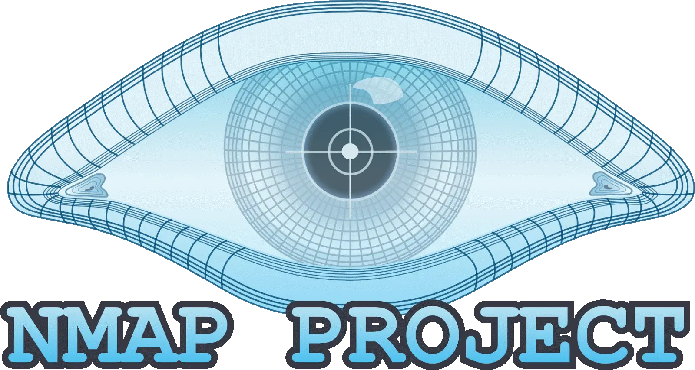

Best Hacking Tools in 2024
December 10, 2023 by Griffin

Hacking has seen a dramatic rise in popularity in the past couple of years thanks to Ethical
Hacking Platforms like HackerOne, Bugcrowd, and Intigriti.
Hacking has become a great career path for many people who are curious about technology and like to hack in a legal way.
In this article, we will discuss the Best Hacking Tools that you add to your repository to become a better hacker.
Disclaimer: All of the tools described in this article are meant to be used for Educational purposes only!
What tools do most Hackers use?
Most hackers use a variety of tools to help them with their hacking activities.
Some of the most popular hacking tools include:
Burp suiteMostly used for web application testing.
Metasploit: This is a hacking tool that allows hackers to exploit vulnerabilities in systems.
Nmap:This hacking tool is used for network exploration and security auditing.
Wireshark:This tool is used for packet capture and analysis.
Aircrack-ng:This hacking tool is used for wireless network hacking.
John the Ripper:This password-cracking tool is used to brute force passwords.
SQLmap:This hacking tool is used for SQL injection attacks.
Maltego:This hacking tool is used for link analysis and open-source intelligence gathering.
These are just some of the most popular hacking tools that are used by hackers. Many other tools are available to help hackers with their activities, some of which we will cover in this article.
What is the most powerful Hacking Tool?
There are many hacking tools available on the internet, but which one is the most powerful? This is a difficult question to answer, as there are a lot of factors to consider.
One hacking tool that is often mentioned as being powerful is Metasploit. This tool can be used to exploit weaknesses in systems and gain access to them. It has a large database of exploits, and new ones are constantly being added. Metasploit is also open source so anyone can contribute to its development.
Another hacking tool that is worth mentioning is Nmap. This tool can be used for network exploration and security auditing.
It can be used to scan for open ports, identify running services, and much more.
Nmap is also open source and has a large community of users.
We would also add Burp Suite to this list since there has been an incredible increase in web application testing in the past couple of years due to the rise in popularity of so-called Bug Bounty Programs.
So, which hacking tool is the most powerful? It depends on your definition of power.

Ultimately, it comes down to what you need a hacking tool for and what features are most important to you.
1. Metasploit Framework
Overview
The Metasploit Framework is on the list of hugely popular hacking tools between both penetration testers and security analysts.
It is backed by a community of more than 200k people who contribute and develop it, creating an infrastructure where you can build your custom exploits and scripts.
It is one of the must-know tools if you are interested in getting into Cybersecurity.
The Metasploit framework is essentially a computer security project which provides the user with essential information regarding
known security vulnerabilities and real-world attacks and helps to formulate the penetration testing and IDS use cases, plans, strategies, and methodologies for exploitation.
Most of the in-demand practical IT Security courses, such as CEH or OSCP have also included a Metasploit component.
There is also a detailed tutorial about how to get started with Metasploit, have a look at the complete beginner guide here.
Availability
It is available in both Free and Paid versions which can be found here.
2. Burp Suite
Overview
Burp Suite is a penetration testing framework based on the Java programming language, which is used to find security flaws in web applications.
It is one of the most widely used hacking tools by both penetration testers and security analysts to find out the potential vulnerabilities using the OWASP TOP 10 standard of passing the security evaluation.
Burp Suite helps in identifying the vulnerabilities and verifying the attack vectors which can affect web applications.
Due to its popularity, it is considered the industry standard when it comes to Web Application Testing.
In the simplest form, the Burp Suite works like an Interception Proxy which means that while browsing the target web application, a user can configure their internet browser to route all the traffic through the Burp Suite proxy server, which then acts as a sort of Man In The Middle as it will captures and analyzes each request from or towards the target web application server so that the data being transmitted or being received can be interpreted in the plain text.
It can even decrypt and read the HTTPS traffic by importing a custom Burp certificate in the browser.
The captured requests can be parsed, manipulated, and replayed individually in the HTTP requests section for analyzing the potential data input parameters or injection points of the web page.
Injection points can also be specified for manual as well as automated fuzzing attacks to discover potentially unintended application behavior, crashes, and error messages.
It is one of the tools which should make it into your bucket list of things to learn.
There is even a tutorial in which we have shown the usage of Burp Suite. You may want to have a look here.
Availability
Like Metasploit, it also comes in both Free and Paid versions which can be found here.
3. Nessus
Overview
Nessus is one of the most popular vulnerability scanning tools out in the market that is being used by many professional penetration testers and auditors around the world for both internal and external vulnerability assessments in banks and different organizations.
Tenable, a famous cybersecurity company, has developed it and is maintaining it.
It has a web interface that is used to set up scanning and audits and to view reports.
Along with one of the most significant vulnerability knowledge bases, its most prominent features includes identifying the vulnerabilities which could allow a remote attacker to access sensitive data from the system,
checking for the patches of offered service by the server, password level weaknesses (default or standard) authentication check on the service, firewall and system configuration audits,
mobile device audits, SCADA, audits, web application audits, PCI DSS compliance checks, malware scanning, host discovery and many more.
The results of all of these can be viewed in a beautiful customized report.
Nessus can also integrate with the Metasploit framework to extend the scanning phase for co-relating the vulnerabilities with their available exploits.
In my opinion, it is one of the must-have tools.
Availability
It is available in both free and paid versions, which can be found here.
The free version has a lot of limitations compared to the pro, which is very expensive.
4. Nmap
Overview
Nmap project, also known as network mapper, is a security tool used by information security professionals to manage, explore, and audit the network and operating system security of both the local and remote hosts.
Nmap project is one of the most legacy port scanners in existence since 1997, and it gets continually developed and actively updated with the addition of new features with time.
It is regarded as the most effective network mapper by network administrators and cybersecurity professionals around, known for being efficient and consistently delivering effective results with any network investigation.
It is available in both GUI and command-line versions with the prominent features of fingerprinting dozens of types of devices, along with port-scanning capabilities,
operating system type with version detection, service type with version detection, ping sweeps, firewall bypass scan, reconnaissance,
vulnerability detection, exploit verification and custom scripts with the ability of scanning scan massive networks thousands of machines.
You can even make changes in its code as it is open source and use its libraries to get the network scanning capability in your custom-made scanner.
Availability
It is available with full source code of both GUI and command-line versions, which can be found here.
We have created an entire tutorial series revolving around Nmap. You can find the series here:
- üëâ Part 1 ‚Äì Nmap Basics
- üëâ Part 2 ‚Äì Nmap Host Discovery
- üëâ Part 3 ‚Äì Advanced Nmap Commands
- üëâ Part 4 ‚Äì Nmap NSE Scripts
- üëâ Part 5 ‚Äì Nmap on Windows
5. Wireshark

Overview
Wireshark is amongst the most popular hacking tools that are used for a reason. It uses a network protocol analyzer and network sniffer, which lets you check for different types of data segmented
into packets regardless of the protocols used and running between a source and destination in real-time and implements the filters, color-coding, and other features which let the user dig deeper into network traffic and inspect individual packets.
Wireshark can also perform live capturing of packets and analyzes them to find various payloads transmitting in the network and provides its result with verbose output in a human-readable form.
It is widely known for its ability to detect security problems in a network, as well as for its effectiveness in solving networking problems. It comes both in GUI named Wireshark GUI and a command-line interface called Tshark.
It lets you see the activities on a network from the most basic level, provided with PCAP file access, customized reports, alerts, etc.
If you would like to become an offensive security tester or work as a security analyst, then it is a tool you must learn.
We have also created a tutorial to understand how to make use of it. Briefly you can find it here.
Availability
It is free and open-source software that can be found here.
6. OpenVAS
Overview
OpenVAS is a framework that also stands out in the list of top hacking tools, which is developed by Greenbone Networks.
It provides comprehensive scanning services and a robust vulnerability scanning and management package.
It is an open-source program that has now become a fork to one of the most popular vulnerability scanners, Nessus.
It is made up of three parts, a feed system that keeps pace with the newly discovered vulnerabilities and threats which gets updated by Network Vulnerability Tests (NVTs) regularly,
a scanner that runs the NVTs feeds against the target and an SQLite3 database which stores the test configurations and scan results.
Best Hacking Books in 2024 -The Definitive List
December 10, 2023 by Griffin

Welcome to your definitive 2024 guide on the Best Hacking Books. Our thoroughly curated list encapsulates not
only the latest releases but also timeless masterpieces that have the potential to shape you into a seasoned hacker.
These selections, each scrutinized meticulously by my team and often part of my personal library, have been essential companions on my hacking odyssey.
Revisiting these books to craft this guide has reignited their worth, and I am thrilled to share the fruits of our extensive research with you.
If you desire a genuine, in-depth review of the best hacking books, sidestepping the commonplace Amazon reviews mash-up,
you’ve landed in the right place.
We’re dedicated immense effort to ensure this article serves as a reliable compass for your hacking journey.
While some of the included books may date back a decade or more, rest assured their core
principles remain as relevant today as they were at the time of publication.
No book on this list is obsolete; even older editions offer invaluable insights often overlooked in newer texts.
So prepare to delve into these classics and uncover their enduring wisdom.
Our favourite Hacking Books in 2024
- The Hacker Playbook 2
- The Hacker Playbook 3
- Real-World Bug Hunting
- Hacking APIs: Breaking Web Application Programming Interfaces
- RTFM: Red Team Field Manual v1
- RTFM: Red Team Field Manual v2
- Hacking: The Art of Exploitation, 2nd Edition
- The Web Application Hacker’s Handbook: Finding and Exploiting Security Flaws
- Penetration Testing: A Hands-On Introduction to Hacking
- Kali Linux Revealed: Mastering the Penetration Testing Distribution
- Ghost in the Wires: My Adventures as the World’s Most Wanted Hacker
- Advanced Penetration Testing: Hacking the World’s Most Secure Networks
- Black Hat Python, 2nd Edition: Python Programming for Hackers and Pentesters
- Honorable Mention: Hacking mit Metasploit, 3rd Edition
- Bug Bounty Bootcamp: The Guide to Finding and Reporting Web Vulnerabilities
- Where To Buy
- Conclusion
- FAQ
Conclusion
This guide should provide you with a clear roadmap on which hacking books to delve into and the ideal sequence to approach them. Despite technological advancements, I strongly believe that learning from books retains its invaluable charm. It remains my preferred method due to the structured and methodical progression it offers, which aligns with my learning style.
I invite you to share your favorite ethical hacking books in the comments. I’m always eager to explore new suggestions and may incorporate your recommendations into the list. Don’t forget to bookmark this article and revisit it periodically; I’ll be consistently updating the list as time progresses.
FAQ
Which book is best to become a hacker?
The best book to become a hacker largely depends on your current knowledge level and specific areas of interest.
However, a highly recommended starting point is “The Hacker Playbook 2” by Peter Kim.
This book provides a comprehensive guide to penetration testing and hacking, covering a range of topics from setting up your
testing environment to advanced exploitation techniques. It’s written in an accessible manner, making it suitable for beginners
and more advanced readers alike.
Ethical hacking is a vast field, and no single book can cover all aspects.
It’s advisable to read multiple books and resources to gain a broad and deep understanding of the subject.
Can I learn hacking from books?
Absolutely, books are a great resource to learn hacking, particularly ethical hacking. They provide structured and detailed information on various topics such as penetration testing, network security, cryptography, and more. Books like “The Hacker Playbook” series, “Hacking: The Art of Exploitation”, and “Metasploit: The Penetration Tester’s Guide” are excellent resources. However, it’s important to remember that practical experience is also crucial in this field.
Alongside reading, you should practice your skills in a safe and legal environment, such as a virtual lab or through platforms that offer ethical hacking challenges. Always remember, the knowledge gained should be used responsibly and ethically.
What do hackers study?
Hackers, particularly ethical hackers, study a wide range of subjects to understand and exploit vulnerabilities in systems.
Here are some key areas:
Computer Programming: Knowledge of programming languages like Python, JavaScript, C++, and PHP is essential.
Understanding how software is built helps hackers find and exploit vulnerabilities.
Networking:Understanding how data moves across the internet, including the intricacies of TCP/IP, routers, switches, firewalls, and other networking hardware and protocols, is crucial.
Opertaing System: Hackers often specialize in one or more operating systems (Windows, Linux, macOS) to understand their vulnerabilities and exploit them.
Cryptography:This involves studying how information is encrypted and how to decrypt it without a key.
Web Technologies: Knowledge of HTML, CSS, JavaScript, and server-side programming languages, as well as how web servers and browsers interact, is important for exploiting web-based applications.
Databases:Understanding SQL and how databases work is necessary for launching and preventing SQL injection attacks.
Software Engineering: Understanding the software development process can help hackers find vulnerabilities in the code.
Cybersecurity Frameworks and Tools:Hackers need to be familiar with various tools used for penetration testing and vulnerability scanning, such as Metasploit, Wireshark, and Burp Suite.
Social Engineering:This is the art of manipulating people to give up confidential information. It’s a non-technical kind of hacking, but it’s just as important to understand.
Remember, ethical hackers use this knowledge to help secure systems and networks by identifying vulnerabilities and weaknesses.
Share your thoughts in the Comments